Introduction
Providing good user experience (UX) for a command line application can be tricky.
This book shows how such an application can be designed using the async programming paradigm.
Written for the Rust Auckland meetup 2020-02-03.
- Rust Auckland meetup: https://www.meetup.com/rust-akl/
- Slack: https://rust-akl.slack.com/messages/CCC7KUXMY/
- Repository: https://github.com/azriel91/clapping_asynchronously
Feel free to use and improve on these.
Scenario
A client has a list of property title numbers and owners. Each title number is associated with additional information -- address, sales information, and phone number.
However, the additional information is stored in a separate place, and requires authentication to access.
Your job is to merge all of the information into the same list.
Concretely, turn this:
| Property Title | Owners | Address | Phone Number | Last Sale |
|---|---|---|---|---|
AA1234/01 | John Smith, Mary Smith | |||
BB5678/02 | John Doe | |||
.. | .. |
Into this:
| Property Title | Owners | Address | Phone Number | Last Sale |
|---|---|---|---|---|
AA1234/01 | John Smith, Mary Smith | 123 Something Street, Somewhere | 123-4567 | 1997 |
BB5678/02 | John Doe | 456 Another Street, Somewhere Else | missing | 2002 |
.. | .. | .. | .. | .. |
Minimum Viable Product
The smallest application that does the job:
- Read credentials.
- Read property title records.
For each record:
- Authenticate with server.
- Retrieve information.
- Augment record.
- Output record to file.
Example
Vision
Interrupt Handling
Execution Report
Cross Platform
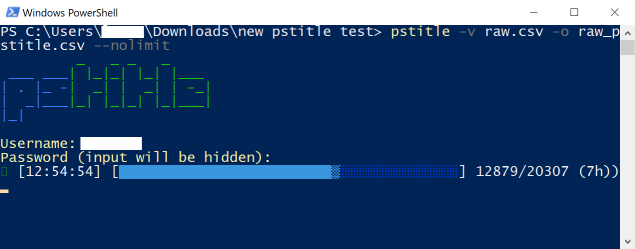
Quality Software
| Minimum Viable Product | Quality Product |
|---|---|
| 0. Handle interruptions. | |
| 1. Read credentials. | 1. Read credentials. |
| 2. Read property title records. | 2. Stream property title records. |
| 3. Read output file for processed records. | |
| 4. Start progress bar. | |
| For each record: | For each record: |
| 5. Rate limit requests -- don't overload server. | |
| 3. Authenticate with server. | 6. Authenticate with server if necessary. |
| 4. Retrieve information. | 7. Retrieve information. |
| 5. Augment record. | 8. Augment record. |
| 6. Output record to file. | 9. Output record to file. |
| 10. Update progress bar. | |
| When interrupted, or done: | |
| 11. Output execution report. |
Synchronous
The quality product can be implemented synchronously.
| Quality Product |
|---|
| 0. Handle interruptions. |
| 1. Read credentials. |
| 2. Stream property title records. |
| 3. Read output file for processed records. |
| 4. Start progress bar. |
| For each record: |
| 5. Rate limit requests -- don't overload server. |
| 6. Authenticate with server if necessary. |
| 7. Retrieve information. |
| 8. Augment record. |
| 9. Output record to file. |
| 10. Update progress bar. |
| When interrupted, or done: |
| 11. Output execution report. |
In code (source):
fn main() {
// ..
let interrupt_rx = t00_setup_interrupt_handler();
let credentials = t01_read_credentials();
let records = t02_stream_property_title_records(record_count);
let records_precompleted = t03_read_output_file(skip);
t04_start_progress_bar(&mut reporter);
let _result = records
// ..
.map(|(n, record)| {
t05_rate_limit_requests(delay_rate_limit);
t06_authenticate_with_server(n == 0, credentials, delay_auth);
t07_retrieve_information(n, record, delay_retrieve);
t08_augment_record(record, info)
})
.try_for_each(|property_record_populated| {
t09_output_record_to_file(property_record_populated);
t10_update_progress_bar(&mut reporter);
});
t11_output_execution_report(&reporter);
}
Demo:
git clone git@github.com:azriel91/cli_async.git
cd cli_async
git worktree add ./sync sync
cd sync
cargo build --release
time ./target/release/cli_async -c 100 --delay-rate-limit 0 --delay-retrieve 1
Async
The quality product can be implemented asynchronously.
| Quality Product |
|---|
| 0. Handle interruptions. |
| 1. Read credentials. |
| 2. Stream property title records. |
| 3. Read output file for processed records. |
| 4. Start progress bar. |
| For each record: |
| 5. Rate limit requests -- don't overload server. |
| 6. Authenticate with server if necessary. |
| 7. Retrieve information. |
| 8. Augment record. |
| 9. Output record to file. |
| 10. Update progress bar. |
| When interrupted, or done: |
| 11. Output execution report. |
In code (source):
⚠️ DO NOT USE THIS AS A REFERENCE IMPLEMENTATION
- Add
asyncto functions and blocks. - Add
.awaitto function calls. - Spawn tasks.
#[tokio::main]
async fn main() -> Result<(), ()> {
// ..
let (ctrl_c_future, interrupt_rx) = t00_setup_interrupt_handler();
let credentials = t01_read_credentials();
let records = t02_stream_property_title_records(record_count);
let records_precompleted = t03_read_output_file(skip);
t04_start_progress_bar(&mut reporter);
let reporter_future = async move {
t10_update_progress_bar(&mut reporter).await;
t11_output_execution_report(&reporter);
};
let processing_future = async move {
tokio::stream::iter(records)
.then(move |(n, record)| async move {
t05_rate_limit_requests(delay_rate_limit).await;
t06_authenticate_with_server(n == 0, credentials, delay_auth).await;
t07_retrieve_information(n, record, delay_retrieve).await;
t08_augment_record(record, info)
})
.try_for_each_concurrent(10, move |property_record_populated| async move {
t09_output_record_to_file(property_record_populated).await;
})
.await
};
let reporter_handle = tokio::spawn(reporter_future);
let ctrl_c_handle = tokio::spawn(ctrl_c_future);
let processing_handle = tokio::spawn(processing_future);
let processed_or_interrupted = async {
tokio::select! {
_ = ctrl_c_handle => {}
_ = processing_handle => {}
}
};
let (_, _) = tokio::join!(reporter_handle, processed_or_interrupted);
}
Demo:
git clone git@github.com:azriel91/cli_async.git
cd cli_async
git worktree add ./async_one async_one
cd async_one
cargo build --release
time ./target/release/cli_async -c 100 --delay-rate-limit 0 --delay-retrieve 1
Fast Food
Consider a fast food restaurant taking orders:
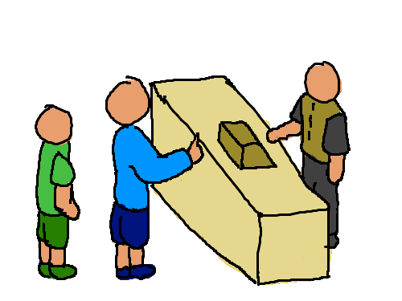
A simple, but low throughput method to handle orders is:
- Accept order from customer 1.
- Request order 1 to be made.
- Wait for order 1 to be completed.
- Give order 1 to customer 1.
Then,
- Accept order from customer 2.
- Request order 2 to be made.
- Wait for order 2 to be completed.
- Give order 2 to customer 2.
We can increase throughput of taking and completing orders through concurrency and parallelism.
Concurrency
- Workers can handle another customer's order while waiting for an earlier one to proceed.
- More efficient use of existing resources.
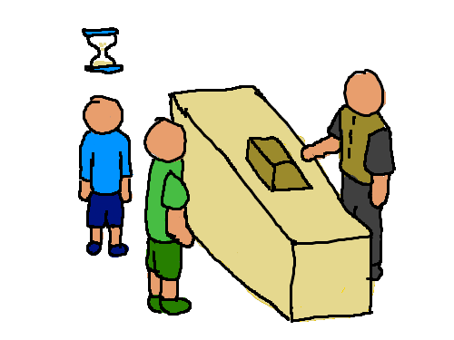
During the waiting time of the first order, we can start processing the second order:
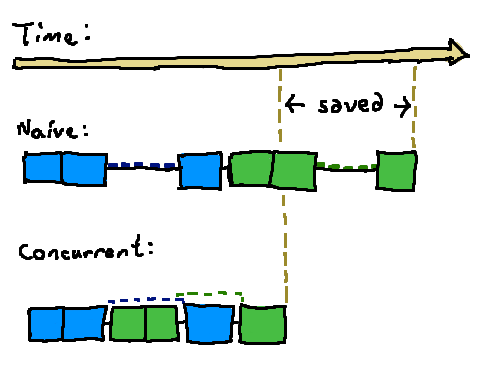
Parallelism
- Multiple workers handle customers' orders.
- Uses more resources.
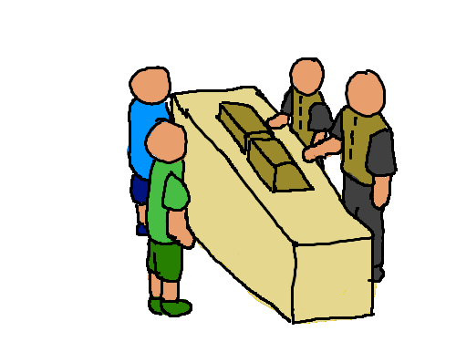
During the waiting time of the first order, we can start processing the second order:
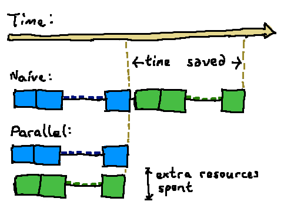
Different Work
One Request, Multiple Tasks
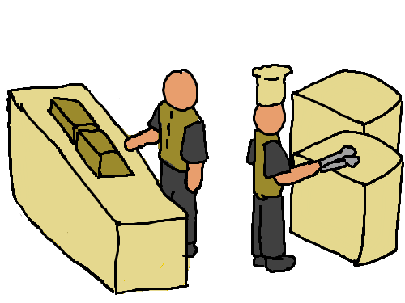
There are many steps needed to be done to complete one customer order.
For any worker that takes orders, their task is to:
- Receive the order.
- Request the kitchen to process the order.
- Take the processed order and return it to the customer.
In the kitchen, the task is to:
- Receive the order request.
- Prepare the order.
- Send it back to the counter.
Who Does What
Mental Shift
Instead of:
Some workers take orders. Other workers process them.
Switch your mindset:
- Taking orders is one kind of work.
- Processing orders is another kind of work.
- Available workers do any available work.
In this model, with two workers:
- Worker A may take an order and send it for processing.
- Worker B may finish processing an order and send it back to the counter.
- Worker A may switch to do processing work, and receive its own request from step 1.
Task Organization
When different kinds of tasks exist, we have organize them based on the resources they require.
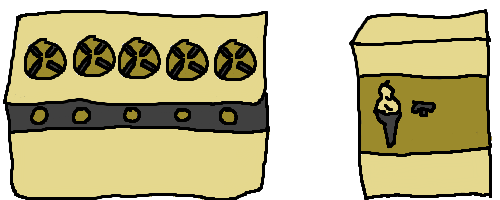
-
New Task Per Request (Resource may be shared):
"Turn on a new stove top each time an order needs to be processed."
- One person can turn on multiple stove tops (can be concurrent).
- Two people can turn on stove tops (can be parallel).
- Only possible when the resource is able to handle it.
-
One Long-Lived Task (Resource is exclusive):
"The ice cream machine can only create one ice cream at a time."
- One person can only make one ice cream at one time (cannot be concurrent).
- Cannot have two people make one ice cream each (cannot be parallel).
- Only one person has access to the ice cream machine.
- The person who has access receives requests to make ice creams, and sends them back.
Communicating
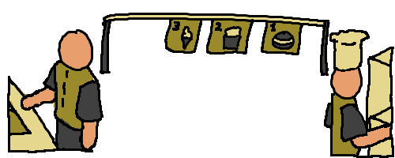
When information needs to be passed between different types of work, it needs to be communicated.
-
New Task Per Order
- Include information when creating the task.
- Easy.
-
Long-Lived Task
- Set up a communication channel.
- Send information through the channel.
Asynchronous Design
It's cleaner to structure code for asynchronous execution by design, instead of by evolution.
- Categorization -- group logic by resource access.
- Create information flow graph.
- Write code.
Rushed Migration
Hack approach (not necessarily recommended, but has its uses):
-
Add
asyncin front offns:pub fn t07_retrieve_information(..) pub async fn t07_retrieve_information(..) -
Change synchronous logic to asynchronous logic:
std::thread::sleep(Duration::from_millis(delay)); tokio::time::delay_for(Duration::from_millis(delay)).await -
Use types with asynchronous support:
// synchronous -- will idly wait when there are no messages. let (tx, rx) = crossbeam::channel::unbounded::<_>(); // asynchronous -- will switch to a different task when there are no messages. let (tx, rx) = tokio::sync::mpsc::unbounded_channel::<_>(); -
Swap understandable errors for impossible ones (tokio#1835):
error[E0308]: mismatched types --> src/main.rs:12:9 | 12 | tokio::spawn(async move { | ^^^^^^^^^^^^ one type is more general than the other | = note: expected type `std::ops::FnOnce<(std::iter::Map<_> + std::marker::Send>>,)>` found type `std::ops::FnOnce<(std::iter::Map<_> + std::marker::Send>>,)>` error: aborting due to previous error
And I show you a still more excellent way.
Categorization By Resource Use
Steps are grouped into categories based on the data / resources it accesses. Each category is a kind of task.
| Quality Product | Input | Processing | Web | Reporting |
|---|---|---|---|---|
| 0. Handle interruptions. | ✔️ | |||
| 1. Read credentials. | ✔️ | |||
| 2. Stream property title records. | ✔️ | |||
| 3. Read output file for processed records. | ✔️ | |||
| 4. Start progress bar. | ✔️ | |||
| For each record: | ||||
| 5. Rate limit requests -- don't overload server. | ✔️ | |||
| 6. Authenticate with server if necessary. | ✔️ | |||
| 7. Retrieve information. | ✔️ | |||
| 8. Augment record. | ✔️ | |||
| 9. Output record to file. | ✔️ | |||
| 10. Update progress bar. | ✔️ | |||
| When interrupted, or done: | ||||
| 11. Output execution report. | ✔️ |
Information Flow
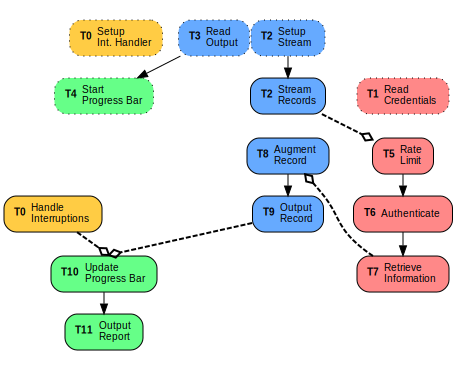
-
Step 1, 2, 3, and 4 are done synchronously, so are not executed concurrently / in parallel.
-
The dashed lines indicate passing data to tasks in a different category. This may take the form of:
-
asyncfunction call:When a new instance of the task may be spawned each time.
pub struct Web(pub Credentials); impl Web { pub async fn retrieve_info(&self, _: &Record) -> PropertyInfo { .. } } // Invoked like so: web.retrieve_info(record).await; -
Channel Send/Receive:
When it is not possible to spawn multiple instances of the task, we use a long-lived task with a channel to receive data.
pub struct Reporter { pub progress_receiver: Receiver<ProgressUpdate>, pub report: Report, progress_overall: ProgressBar, } impl Reporter { pub async fn update(&mut self) { // When receiving a progress update from the channel. while let Some(process_result) = self.progress_receiver.recv().await { match process_result { PropertyInfoResult::Success => { self.report.record_processed_successful_count += 1; } // .. } self.progress_overall.inc(1); } } } // Cannot do this per record because of `&mut self`: reporter.update(process_result).await; // Have to do this instead: progress_channel.send(process_result);
-
Comparison
| Item | Synchronous | Asynchronous |
|---|---|---|
| Logic Network | Simple network of complex tasks | Complex network of simple tasks |
| Effort For Efficiency | Explicitly managed | Natually enforced by the code |
| Library Availability / Maturity | Generally exist | Generally do not exist |
Logic Network
-
sync: Simple network of complex tasks
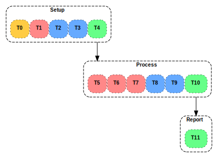
-
async: Complex network of simple tasks
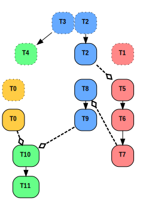
Review
- Good UX can be implemented in both synchronous and asynchronous paradigms.
- It's worth spending time to design an async application before implementation.
- Rust's async ecosystem is still in its early days, but is promising.
Links
- Rust Async Book
- Exploring Async Basics by CF Samson
async-stdtokiocli_async: Stub CLI application repository.